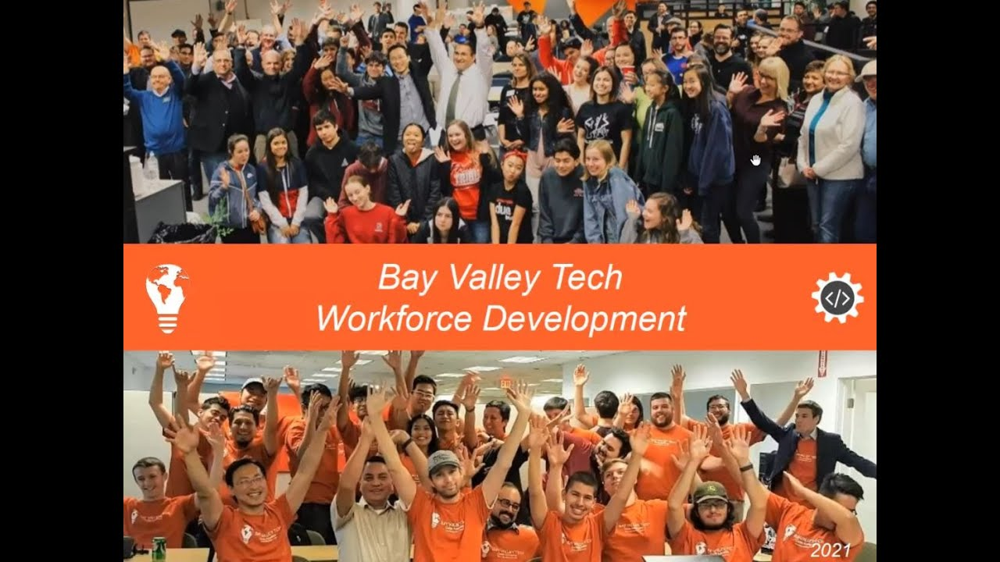
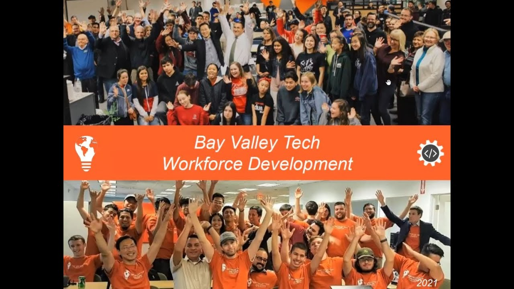

|
 |
|
|
 |
|
My name is Long Nguyen. I was born and raised in Vietnam. I came to the US in 2005 to attend College of Alameda.
I studied Business Administration for 2 years at College of Alameda. Then, i transfered to Cal Sate East Bay to continue my education.
After graduting, i worked at different companies:
| Year: ............... | Company:............. | Position:............ |
|---|---|---|
| 2005-2007 | Kobeya Restaurant | Bus Boy |
| 2005 - 2008 | Accounting Tutor | College of Alameda |
| 2008 - 20011 | Bank of America | Personal Banker |
| 2011 - 2015 | Cal Dept. Health Care | Financial Auditor |
i am always fascinated with computers. We all use computer every day, but we dont really understand how computer works.
I want to learn computer siencse to get a freelance job in tech field.
As i have to work full time, i want to take part time bootcamp program.
I found out a new program called Bay Valley Tech Program . This is a fully online program and tuition free for students.
In order to get into this program, i have to apply and take some prep courses on Khan Academy. After that, i will get an interview to see if i can qualify for the program.
This is a great program for people like me. The company get donations from tech companies for funding. Hence, the students do not have to pay for tuition.
As i have to work full time, i want to take part time bootcamp program.
I found out a new program called Bay Valley Tech Program . This is a fully online program and tuition free for students.
In order to get into this program, i have to apply and take some prep courses on Khan Academy. After that, i will get an interview to see if i can qualify for the program.
This is a great program for people like me. The company get donations from tech companies for funding. Hence, the students do not have to pay for tuition.